Publications
KHU VLL / Student-Led Research
High acceptance. Persistence through revision.
KHU VLL student-first-authored submissions | PI: Jinwoo Choi | Submission record: 2023–2026
Submission-Level Acceptance
15 submission attempts
Eventual Acceptance After Revision
projects shown
Acceptance by conference
Acceptance rate · accepted / submitted shown at right
Revision Outcomes
2 Oral + 1 Highlight + 1 Poster
All four featured projects reached acceptance and three projects got an Oral or Highlight presentation.
See the four revision journeys →
9/15 counts submission attempts; 4/4 counts the revised projects named above. These are different denominators.
Source: KHU VLL internal log and PI-provided histories. External/PI-first-author papers excluded. BMVC appears only in revision outcomes.
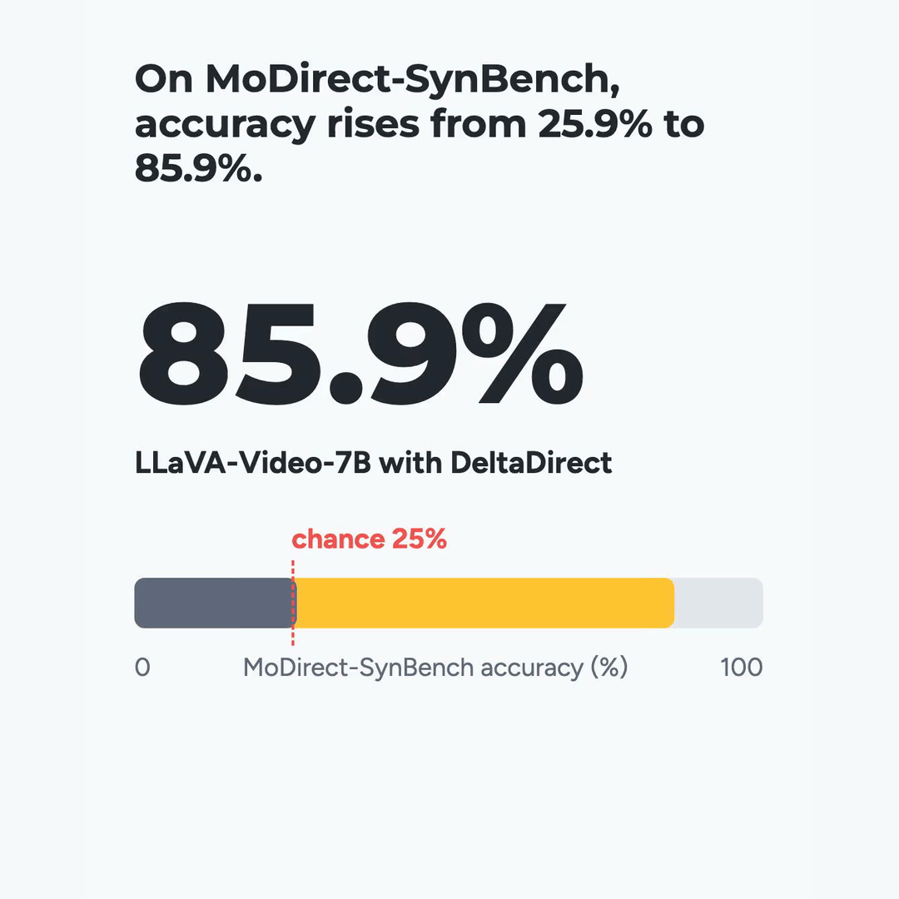
Which Way Did It Move? Diagnosing and Overcoming Directional Motion Blindness in Video-LLMs
Jongseo Lee†, Hyuntak Lee†, Sunghun Kim, Sooa Kim, Jihoon Chung and Jinwoo Choi*
Proceedings of Neural Information Processing Systems (NeurIPS), 2026
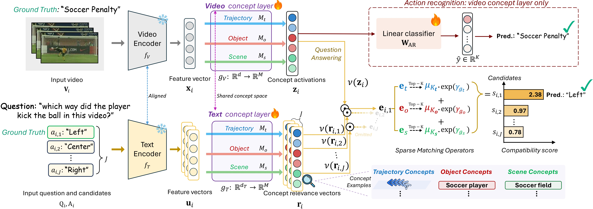
TraCE: Trajectory-Aware Concepts for Explainable Video Understanding
Wooil Lee†, Junpyo Hong†, Jongseo Lee, Tuomas Oikarinen, Tsui-Wei Weng and Jinwoo Choi*
Proceedings of Neural Information Processing Systems (NeurIPS), 2026
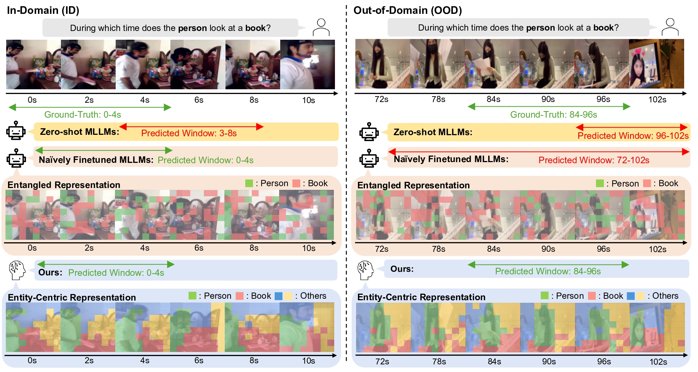
EVIDENT: Routing MLLM Adaptation through Entity-Grounded Visual Evidence for Cross-Domain Video Temporal Grounding
Geo Ahn†, Jiwook Han†, Youngrae Kim†, Joonseok Lee and Jinwoo Choi*
Proceedings of Neural Information Processing Systems (NeurIPS), 2026
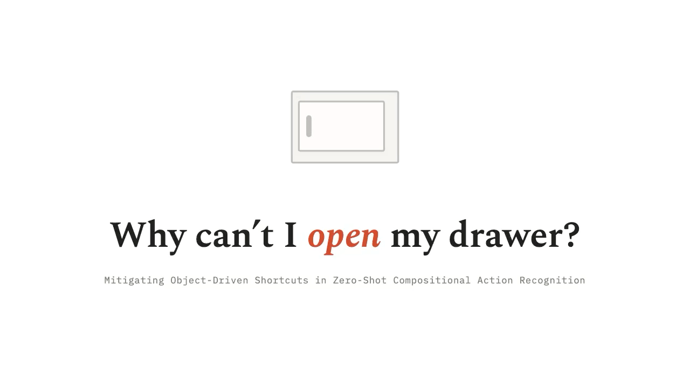
Why Can't I Open My Drawer? Mitigating Object-Driven Shortcuts in Zero-Shot Compositional Action Recognition
Geo Ahn, Inwoong Lee, Taeoh Kim, Minho Shim, Dongyoon Wee and Jinwoo Choi*
European Conference on Computer Vision (ECCV) 2026.
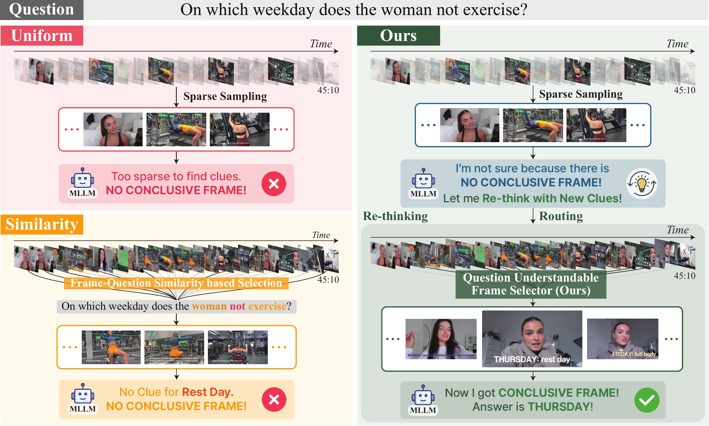
ReQuest: Rethinking-based Question-Aware Frame Selection for Long-Form Video QA
Minkuk Kim†, Suyong Yun†, Young Tae Kim, Jinyoung Moon, Jinwoo Choi* and Seong Tae Kim*
European Conference on Computer Vision (ECCV) 2026.
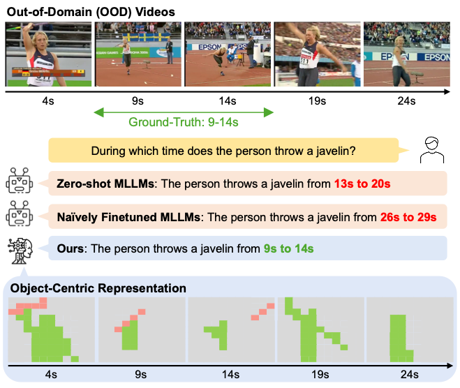
SlotVTG: Object-Centric Adapter for Generalizable Video Temporal Grounding
Jiwook Han †, Geo Ahn†, Youngrae Kim† and Jinwoo Choi*
GRAIL-V workshop, IEEE/CVF Conference on Computer Vision and Pattern Recognition (CVPR) 2026.

Disentangled Concepts Speak Louder Than Words: Explainable Video Action Recognition
Jongseo Lee, Wooil Lee, Gyeong-Moon Park*, Seong Tae Kim* and Jinwoo Choi*
Proceedings of Neural Information Processing Systems (NeurIPS) Spotlight (3.5% acceptance rate), 2025
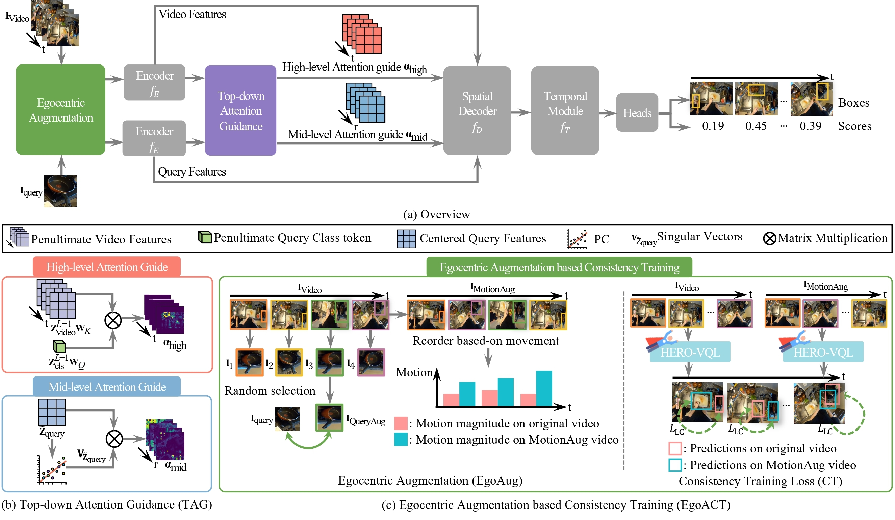
HERO-VQL: Hierarchical, Egocentric and Robust Visual Query Localization
Joohyun Chang†, Soyeon Hong†, Hyogun Lee†, Seong Jong Ha, Dongho Lee, Seong Tae Kim* and Jinwoo Choi*
The Thirty Sixth British Machine Vision Conference (BMVC) Oral (3.8% acceptance rate), 2025
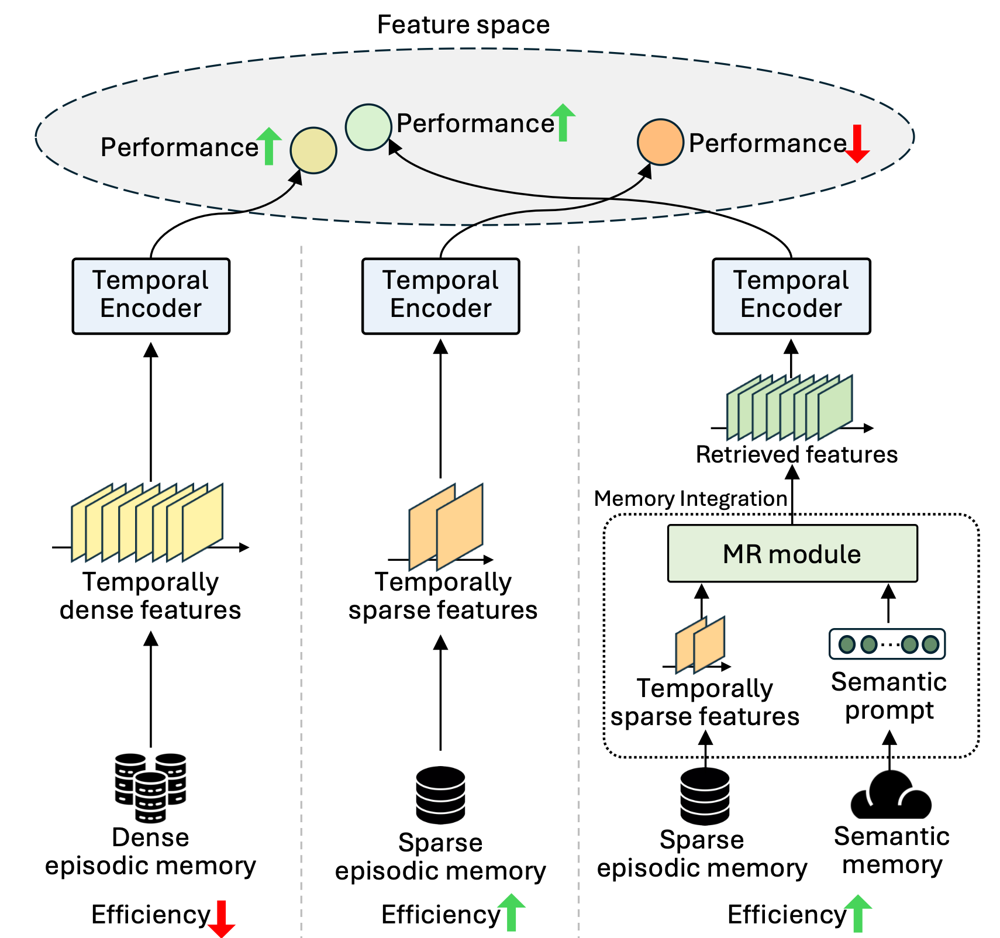
ESSENTIAL: Episodic and Semantic Memory Integration for Video Class-Incremental Learning
Jongseo Lee†, Kyungho Bae†, Kyle Min, Gyeong-Moon Park*, Jinwoo Choi*
IEEE/CVF International Conference on Computer Vision (ICCV) Highlight (2.9% acceptance rate), 2025
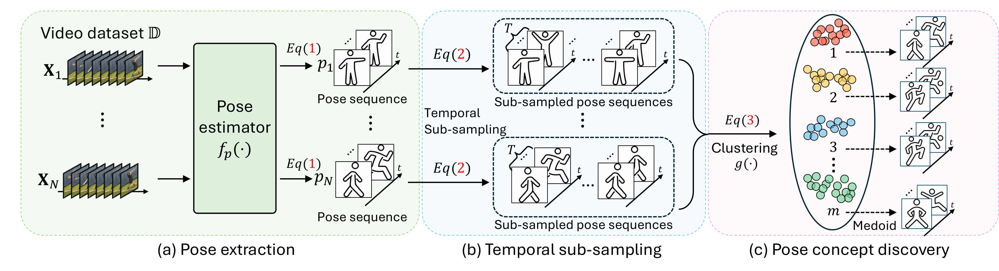
PCBEAR: Pose Concept Bottleneck for Explainable Action Recognition
Jongseo Lee, Wooil Lee, Gyeong-Moon Park*, Seong Tae Kim* and Jinwoo Choi*
4th Explainable AI for Computer Vision (XAI4CV) Workshop, IEEE/CVF Conference on Computer Vision and Pattern Recognition (CVPR), Spotlight (16.7% acceptance rate) 2025
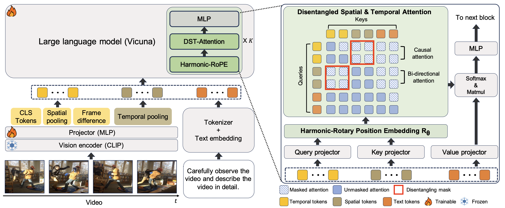
MASH-VLM: Mitigating Action-Scene Hallucination in Video-LLMs through Disentangled Spatial-Temporal Representations
Kyungho Bae, Jinhyung Kim, Sihaeng Lee, Soonyoung Lee, Gunhee Lee*, and Jinwoo Choi*
IEEE/CVF Conference on Computer Vision and Pattern Recognition (CVPR) Highlight (3.7% acceptance rate), 2025
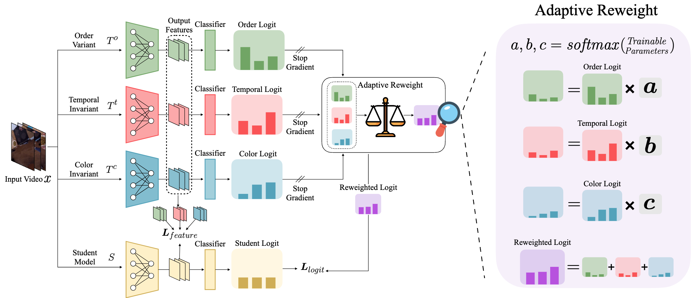
Multi-Teacher Invariance Distillation for Domain-Generalized Action Recognition
Jongmin Shin, Abhishek Maiti, Yuliang Zou, Jinwoo Choi*
International Conference on Pattern Recognition (ICPR) Oral (8.8% acceptance rate), 2024
PDF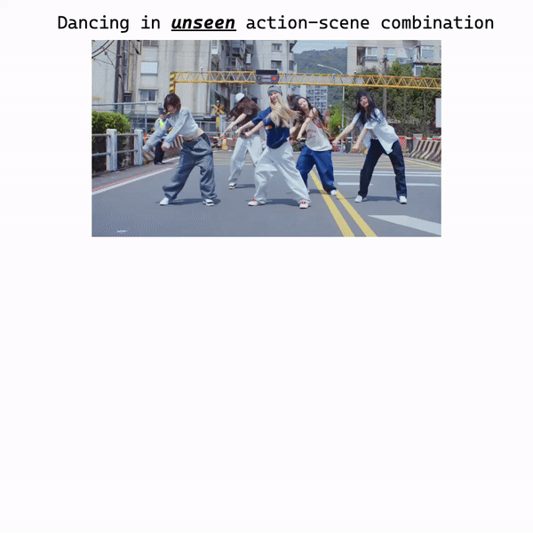
DEVIAS: Learning Disentangled Video Representations of Action and Scene
Kyungho Bae†, Geo Ahn†, Youngrae Kim†, Jinwoo Choi*
European Conference on Computer Vision (ECCV) Oral (2.3% acceptance rate), 2024
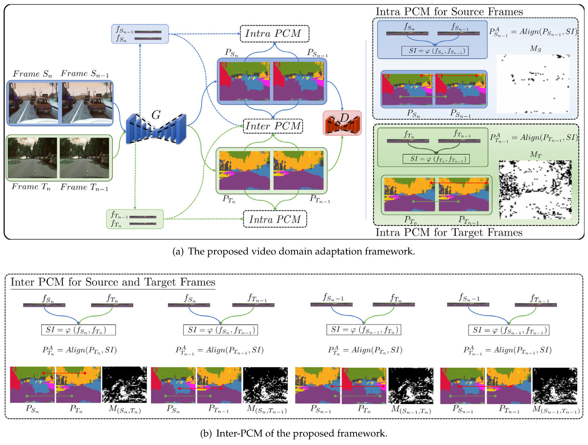
Video Domain Adaptation for Semantic Segmentation using Perceptual Consistency Matching
Ihsan Ullah, Sion An, Myeongkyun Kang, Philip Chikontwe, Hyunki Lee, Jinwoo Choi and Sang Hyun Park*
Neural Networks (NN), Jul. 2024
PDF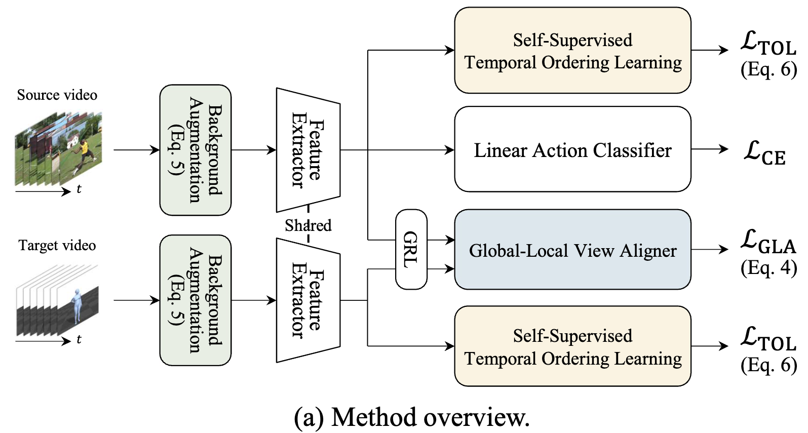
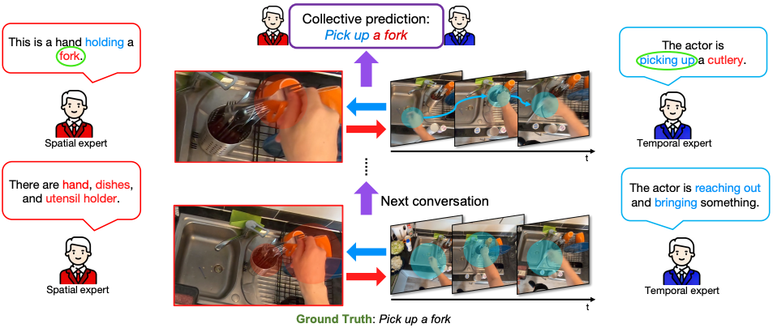
CAST: Cross-Attention in Space and Time for Video Action Recognition
Dongho Lee†, Jongseo Lee†, and Jinwoo Choi*
Proceedings of Neural Information Processing Systems (NeurIPS), 2023
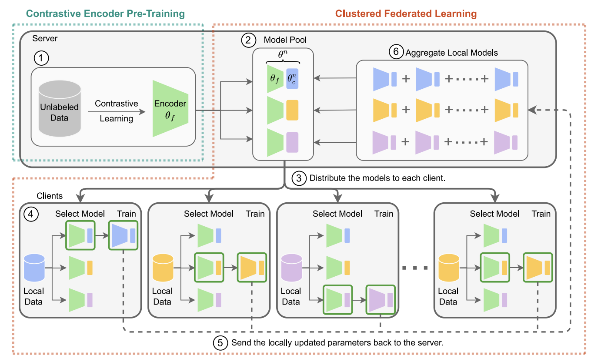
Contrastive encoder pre-training-based clustered federated learning for heterogeneous data
Ye Lin Tun, Minh N.H. Nguyen, Chu Myaet Thwal, Jinwoo Choi, Choong Seon Hong*
Neural Networks, 2023
PDF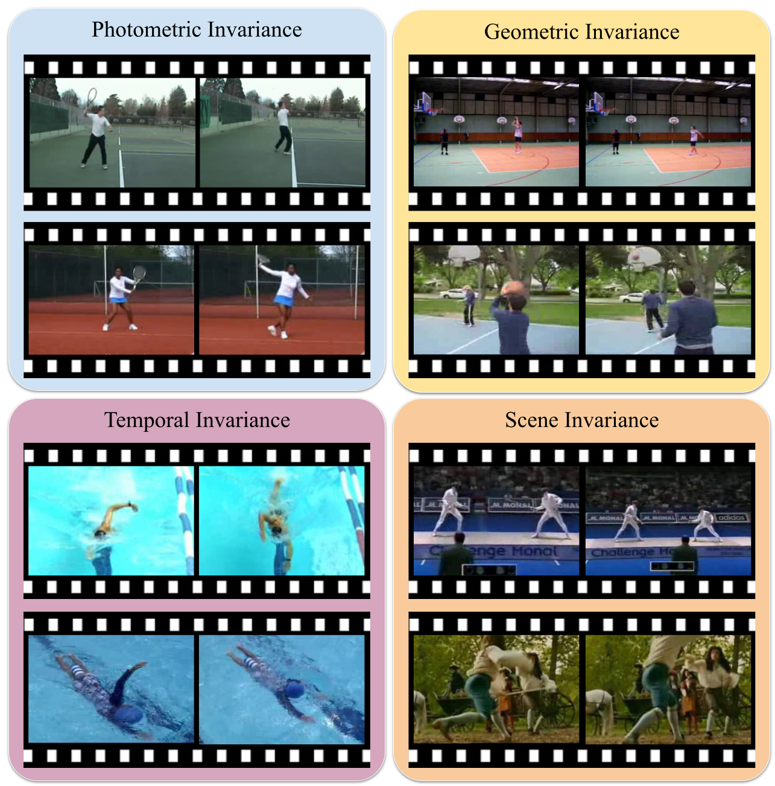
Learning Representational Invariances for Data-Efficient Action Recognition
Yuliang Zou, Jinwoo Choi*, Qitong Wang, and Jia-Bin Huang
Computer Vision and Image Understanding (CVIU), 2023
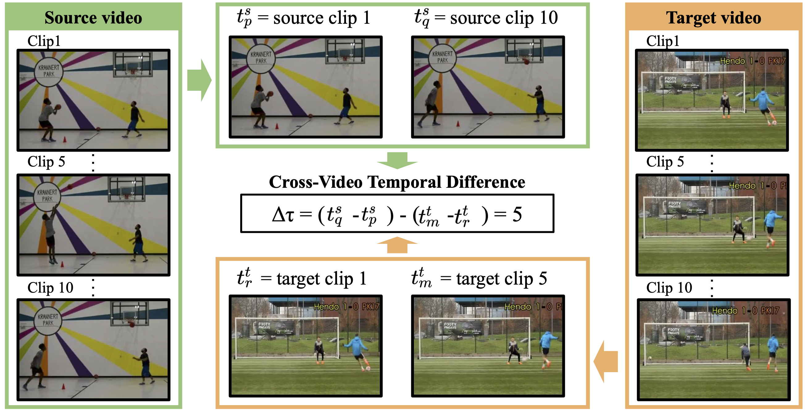
Self-Supervised Cross-Video Temporal Learning for Unsupervised Video Domain Adaptation
Jinwoo Choi, Jia-Bin Huang, and Gaurav Sharma
International Conference on Pattern Recognition (ICPR), 2022.
PDF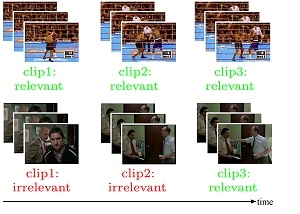
Shuffle and Attend: Video Domain Adaptation
Jinwoo Choi, Gaurav Sharma, Samuel Schulter, and Jia-Bin Huang
European Conference on Computer Vision (ECCV), 2020. (26.4% acceptance rate)

Unsupervised and Semi-Supervised Domain Adaptation for Action Recognition from Drones
Jinwoo Choi, Gaurav Sharma, Manmohan Chandraker, and Jia-Bin Huang
Winter Conference on Applications of Computer Vision (WACV), 2020. (Oral presentation)

Why Can’t I Dance in the Mall? Learning to Mitigate Scene Bias in Action Recognition
Jinwoo Choi, Chen Gao, Joseph Messou, and Jia-Bin Huang
Proceedings of Neural Information Processing Systems (NeurIPS), 2019. (21.2% acceptance rate)

Robust Multi-Person Tracking for Real-Time Intelligent Video Surveillance
Jinwoo Choi, Daesung Moon, and Jang-Hee Yoo
ETRI Journal (SCI), 2015.
PDF
Obscene Video Detection Using Multiple-Classifier Fusion
Jinwoo Choi, and Seungwan Han
Japan-Korea Joint Workshop on Frontiers of Computer Vision (FCV), 2015. (Oral presentation)
PDF
The Visual Object Tracking VOT2014 Challenge Results
Matej Kristan et al. (including Jinwoo Choi),
European Conference on Computer Vision (ECCV) Workshop, 2014
PDF
Real-Time Multi-Person Tracking in Fixed Surveillance Camera Environment
Jinwoo Choi, and Jang-Hee Yoo
IEEE International Conference on Consumer Electronics (ICCE), 2013.
PDF
Multiple Channel Division for Efficient Distributed Video Coding
Sang-Uk Park, Young-Yoon Lee, Jinwoo Choi, Chang-Su Kim, and Sang-Uk Lee
IEEE International Conference on Image Processing (ICIP), 2009.
PDF
Flexible Complexity Control between Encoder and Decoder for Video Coding
Jinwoo Choi, Sang-Uk Park, Chang-Su Kim, and Sang-Uk Lee
IEEE International Workshop on Multimedia Signal Processing (MMSP), 2009.
PDF
Efficient Distributed Video Coding Using Symmetric Motion Estimation and Channel Division
Sang-Uk Park, Jinwoo Choi, Chang-Su Kim, Sang-Uk Lee, Jung Won Kang, and Kyung Jun Lee
IEEE Pacific Rim Conference on Communications, Computers and Signal Processing, 2009.
PDF